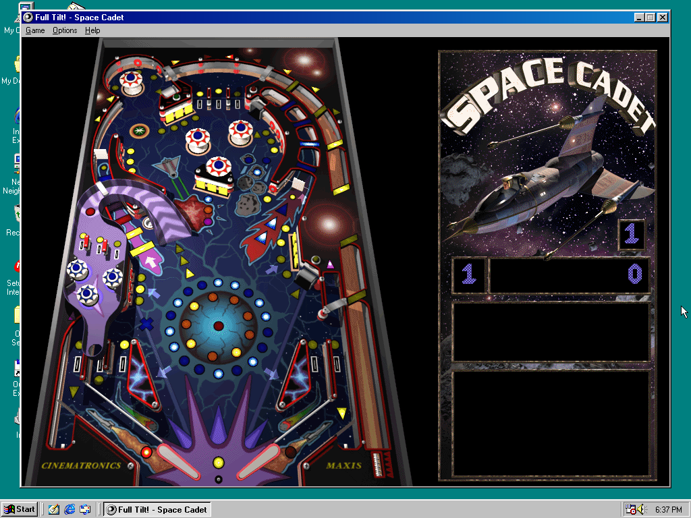

The “3D Pinball Space Cadet” game included with Windows 9x through XP was actually a demo version of a software package developed by Maxis, called Full Tilt!. Full Tilt! included three pinball games: Space Cadet (pictured above), Dragon’s Keep, and Skulduggery.
Mechanics-wise, Full Tilt!’s Space Cadet is similar to the one that came with Windows, with only a couple of differences (besides the graphics), but the other two pinball games are very different.
More screenshots to come…